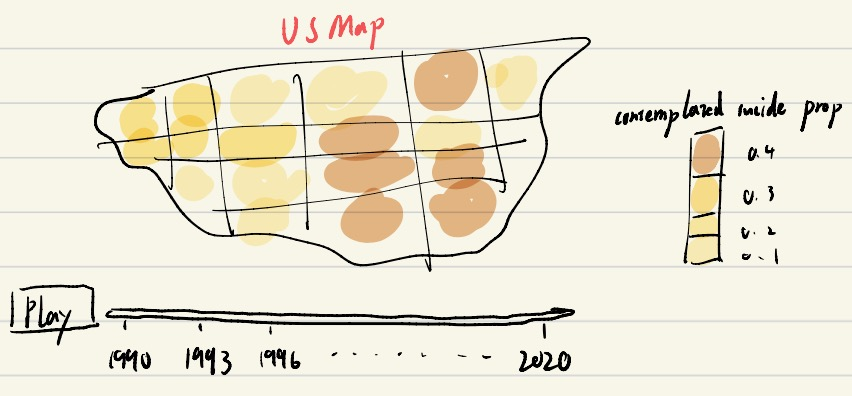

Big Picture & Interactive Plan
Big Picture
Motivation:
Our project is motivetated by the fact that teen suicide is a growing health concern in U.S.. According to the Center for Disease Control and Prevention, teen suicide is the second-leading cause of death for young people ages 15 to 24, surpassed only by accidents. Therefore, we hope to find out which groups of U.S tennagers have a higher probabilty of sucide contemplation. Furthermore, we will try to incorporate other health risk factors into our model to see if they can potentially affect the probability of contemplated suicide. Hence, through this project, our ultimate goal is to identify which particular population has higher suicide risk and the health risk behaviors that can contributed to suicide. Hopefully, our results can provide some valuable suggestions for medical experts to better prevent teen suicide.
Theses:
Our main thesis for this project is to investigate factors affecting U.S. teenager’s contemplated suicide probability. These factors include age, gender, race, state, and weight status as the basis. We will also try to see if health risk behaviors such as smoking, drinking, and drugs having, may contribute to comtemplated suicide probability.
Story:
For now, our data shows some interesting trends regarding predicted suicide and actual suicide, including a inverse trend with gender and a consistent trend with race. The following graph was from our previous analysis:
#Gender
ggplot(suicide_comparsion_sex, aes(x = year)) + geom_line(aes(y = prob_real_suicide, color = sex)) + geom_line(aes(y = prob_contem_suicide, color = sex)) + labs(y = "prob") + annotate("text", x = 2003, y = 0.15, label = "predicted suicide contemplation") + annotate("text", x = 2003, y = 0.02, label = "real suicide")
#Race
ggplot(suicide_comparsion_race, aes(x = year)) + geom_line(aes(y = prob_real_suicide, color = race)) + geom_line(aes(y = prob_contem_suicide, color = race)) + labs(y = "prob") + annotate("text", x = 2010, y = 0.22, label = "predicted suicide contemplation") + annotate("text", x = 2003, y = 0.04, label = "real suicide")
These graphs shows that while females tend to declare that they would attempt suicide, they actually do not actually attempt to do so as often as males. In addition, the predicted suicide probability has similar trend as the real suicide in terms of race but not year, with American Indian/Alaska Native being most likely to commit suicide, while other races tend to be similar.
Interactive Plan
One interesting interactive chart we want to show is down below (we have not drawn it in R but will include it in the future). Using the chart, we hope to see which part in U.S has a relatively higher suicide risk than other parts. Also, as we already add a “play” button, which can automatically shows the data from 1990 to 2020, by looking for the changing in color for various states, we want to see the trend that can shows which parts in US has an increasing suicide comtemplation and which has a decreasing suicide comtemplation. Also, through R Shiny, we will enable visitors to input the age, race, gender, and weight_status and automatically calculate their probability of comtemplated suicide.
